| No | Date | Comments | Version | ISSUE | Approve |
|---|---|---|---|---|---|
| 1 | 25.03.26 | First Draft | 1.0 | Ellen | |
| 2 | |||||
| 3 | |||||
| 4 |
History
Tools
Electric screwdriver\Long-nose pliers\Slotted screwdriver\Zip tie\Scissors
Repair notice
Important Safety Instructions：
1. Wear gloves when carrying out any repair work.
2. Ensure that there are no exposed electrical wires in the maintenance environment and strictly prohibit direct testing of the equipment with AC power to prevent electric shock.
3. When repairing electrical components, please disconnect the battery pack first.
Preparation:
Empty the clean water tank and dirty water tank before disassembly.
Replacement requirements:
1. All parts that have passed the cross-check must be removed from the faulty machine, fitted with the user's original adapter and then subjected to the next replacement test.
2. After repair, organise the removed old parts and unused parts.
Range of spare parts
*The following table lists all the spare parts. Please check the actual inventory before use.
| No | Spare Part Name | Picture | remark |
|---|---|---|---|
| 1 | Mini Power Brush | 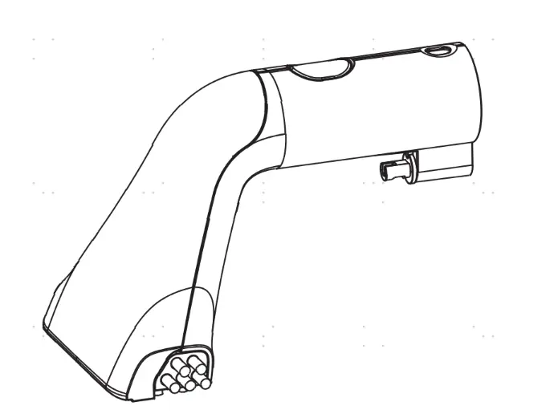 | |
| 2 | Accessory Holder | 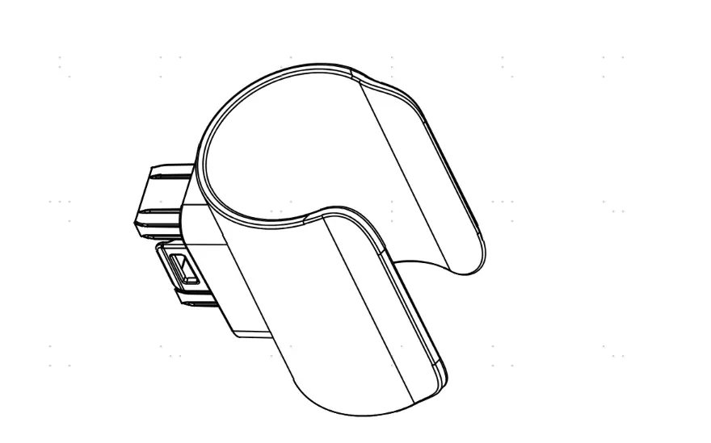 | |
| 3 | plastic part | 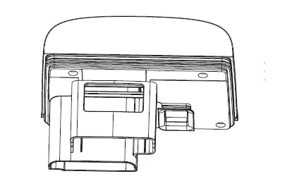 | |
| 4 | plastic part | 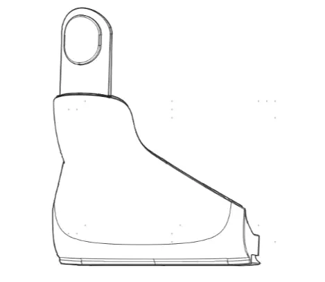 | |
| 5 | Wire | 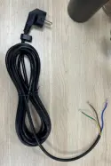 | |
| 6 | Switch | 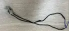 | |
| 7 | Motor | 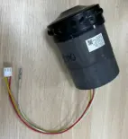 | |
| 8 | PCBA | 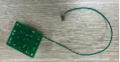 | EMC filter board |
| 9 | Pump | 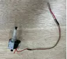 | |
| 10 | Flexible Extension Hose | 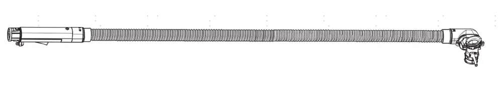 | |
| 11 | Dirt Water Tank | 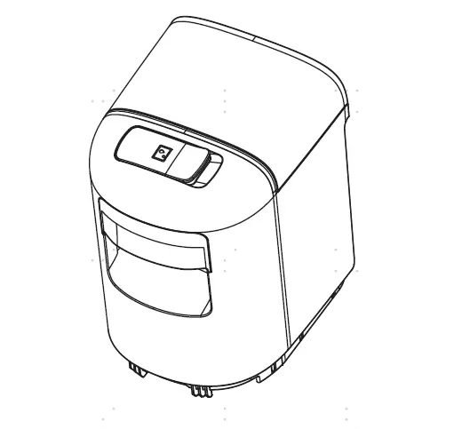 | also Clean water tank |
Range of Product
| No | Product Name | Factory Serial Model | SKU | Note |
|---|---|---|---|---|
| 1 | iCarpet Spot | CL2415E-01 | SC051200ID | |
| 2 | iCarpet Spot | CL2415A-01 | SC050300DE | |
| 3 | iCarpet Spot | CL2415C-01 | SC050700AU | |
| 4 | GO SPOT | CL2415-02 | SC051000US | |
| 5 | iCarpet Spot | CL2415G-01 | SC051600RU | |
| 6 | iCarpet Spot | CL2415C-02 | SC051400AU | |
| 7 | iCarpet Spot | CL2415D-01 | SC050900SA | |
| 8 | iCarpet Spot | CL2415E-02 | SC051300MY | |
Tear down guide
取下所有附件。Remove all spare parts/accessories.
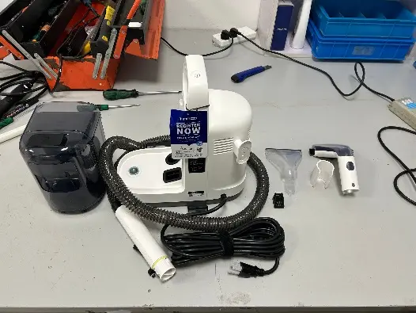
用螺丝刀取下托盘脚垫 Use a screwdriver to detach the tray foot pads.
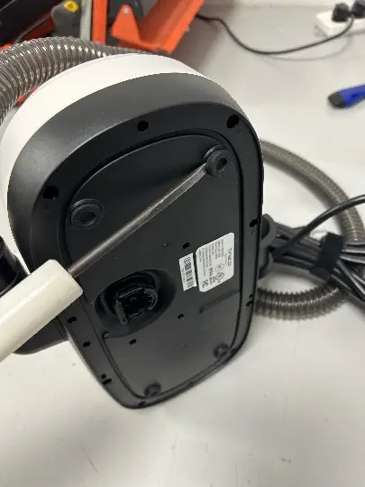
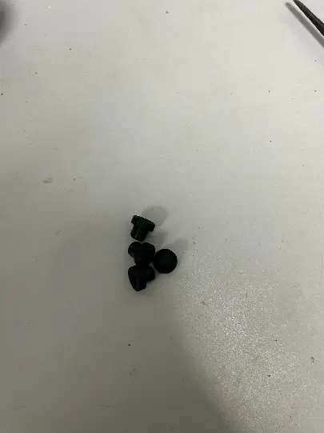
拧下螺丝，拆下机器底座 Unscrew and remove the machine base
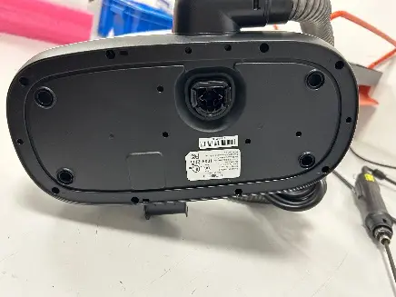
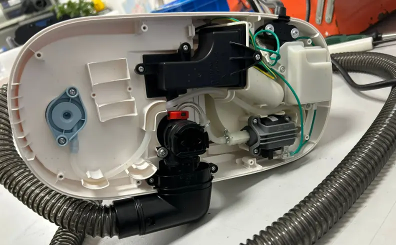
拧下螺丝和水管，拆下下水阀接口 Unscrew and disconnect the water pipe to remove the valve assembly.
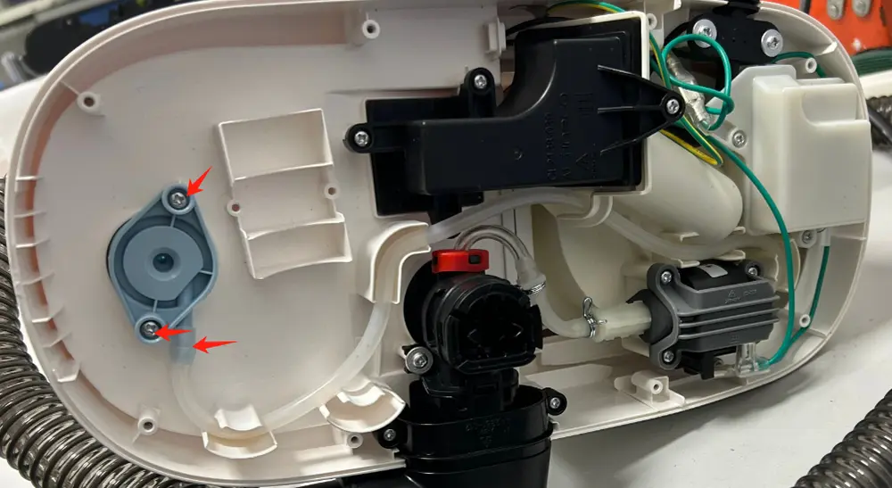
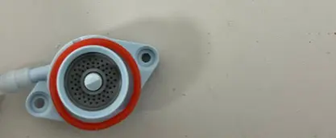
整理水管，拧下螺丝，拔掉段子，拆下水泵Organize pipes, unscrew the screws, unplug terminals, and remove the water pump.
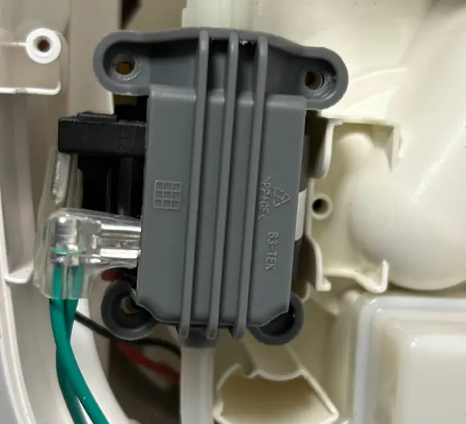
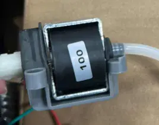
拧下螺丝，拆除水管组件 Unscrew and detach the hose assembly.
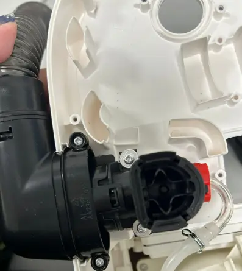
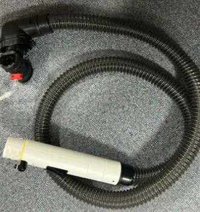
拧下装饰盖螺丝，拔掉端子，拆除EMC滤波板 Remove decorative cover screws, unplug terminals, and take out the EMC filter board
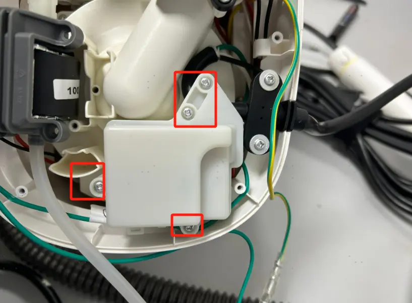
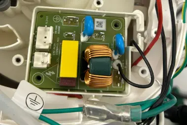
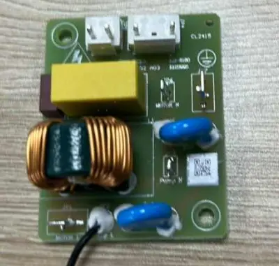
拆除装饰盖螺丝，取下脏污回收口。Remove screws from the decorative cover and detach the dirt suction hose .
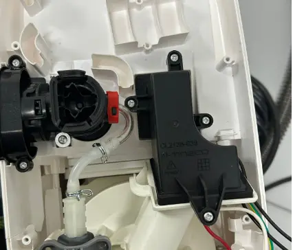
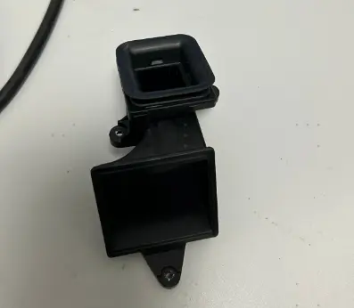
拧下螺丝，拆除电源线 Unscrew and disconnect the power cable.
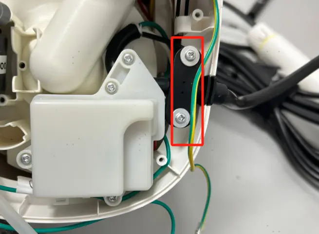
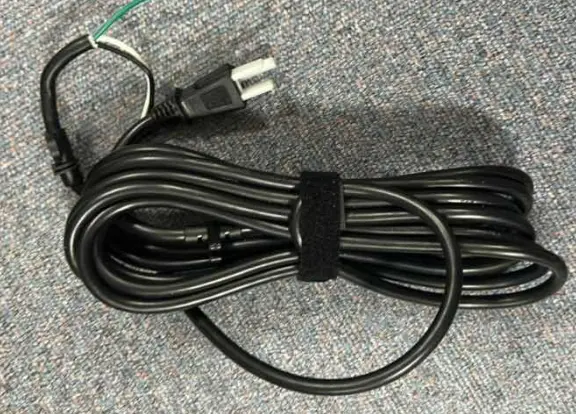
用一字螺丝刀撬开机身，分离机身 Pry open the body with a flathead screwdriver to separate the housing.
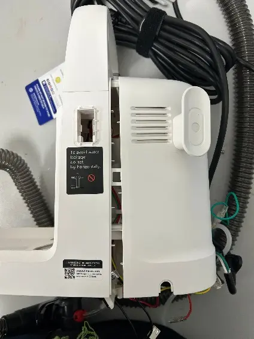
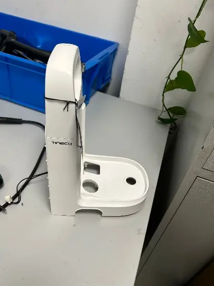
用一字螺丝刀撬开手柄，拧下螺丝，整理线束，取下开关组件 Pry open the handle, unscrew, organize wiring, and remove the switch assembly.
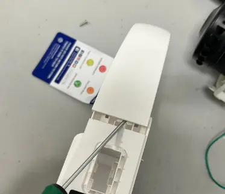
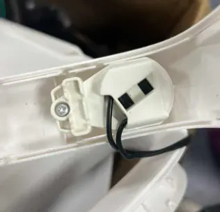
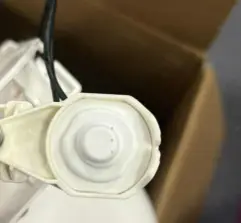
用一字螺丝刀撬开卡扣，取下主机带装饰罩组件，与机身分离。Release clips with a flathead screwdriver, detach the main motor unit with decorative cover, and separate it from the body.
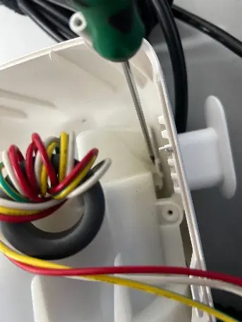
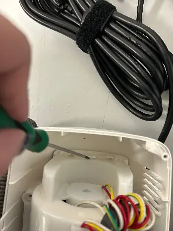
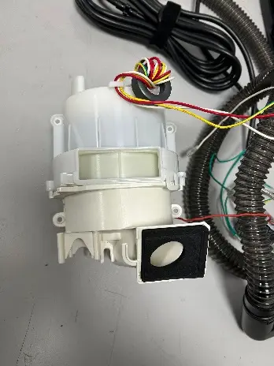
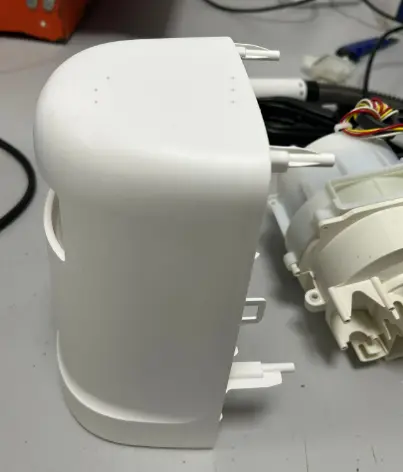
用一字螺丝刀撬开主机装饰盖卡扣，整理磁环缠绕的线束，取下电机. Pry open the main motor unit’s decorative cover clips, arrange the magnet-ring-wrapped wiring, and remove the motor.
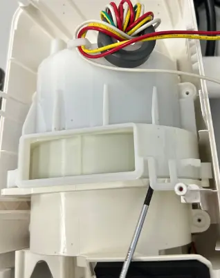
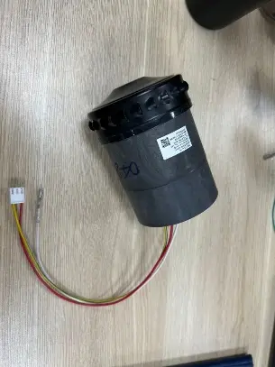
Repair guide
| Failure System | Failure Phenomenon | No | Failure Mode | Repair Solution | Spare Parts |
|---|---|---|---|---|---|
| Water circulation system failure | No/less spray water | 1 | CWT damaged | replace CWT/DWT | CWT/DWT |
| 2 | spray hole blocked | clean spray hole | maintenance | ||
| 3 | spray hole damaged | replace Flexible Extension Hose | Flexible Extension Hose | ||
| 4 | trigger damaged | replace Flexible Extension Hose | Flexible Extension Hose | ||
| 5 | pump failure | replace pump | pump | ||
| 6 | pipe blocked, bent or broken | remove blockage, or replace water pipe | water pipe | ||
| 7 | main motor failure | replace main motor | main motor | ||
| 8 | PCBA/EMC filter board failure | replace PCBA/EMC filter board | PCBA/EMC filter board | ||
| leaking water | 9 | CWT leaking water | replace CWT | CWT | |
| 10 | Flexible Extension Hose damaged | replace Flexible Extension Hose | Flexible Extension Hose | ||
| 11 | pump failure | replace pump | pump | ||
| 12 | water pipe damaged | replace water pipe | water pipe | ||
| 13 | main motor failure | replace main motor | main motor | ||
| 14 | PCBA/EMC filter board failure | replace PCBA/EMC filter board | PCBA/EMC filter board | ||
| no suck up water | 15 | Debris channel /Air duct blocked | empty DWT；clean brush, make sure there is no blockage in suction nozzle; clean filter under CWT/DWT | maintenance | |
| 16 | brush damaged | replace brush | brush | ||
| 17 | Flexible Extension Hose damaged | replace Flexible Extension Hose | Flexible Extension Hose | ||
| 18 | motor failure | replace main motor | main motor | ||
| 19 | PCBA/EMC filter board failure | replace PCBA/EMC filter board | PCBA/EMC filter board | ||
| Turn on failure | After pressing the power button, the unit has no reaction | 20 | switch button failure | replace switch | switch |
| 21 | power cord failure | replace power cord | power cord | ||
| 22 | PCBA/EMC filter board failure | replace PCBA/EMC filter board | PCBA/EMC filter board | ||
| stop running after several times screen dies out | 23 | motor failure | replace motor | motor | |
| 24 | PCBA/EMC filter board failure | replace PCBA/EMC filter board | PCBA/EMC filter board | ||
| 25 | switch button failure | replace switch | switch | ||
| abnormal noise | abnormal noise | 26 | DWT full or brush blocked | empty DWT；clean brush, make sure there is no blockage in suction nozzle; clean filter under CWT | maintenance |
| motor noise | 27 | motor failure | replace main motor | main motor | |
| pump noise | 28 | pump noise | replace pump | pump |